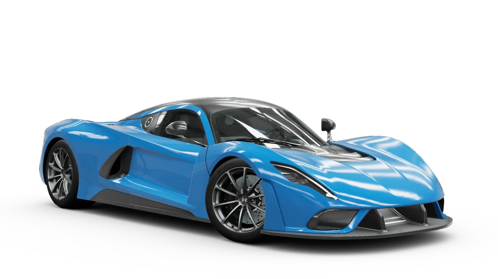
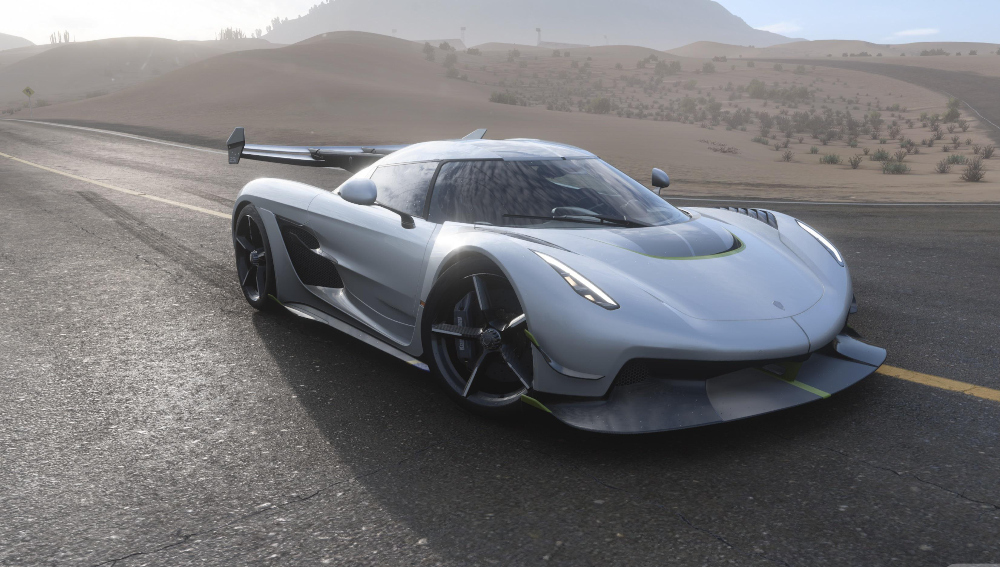
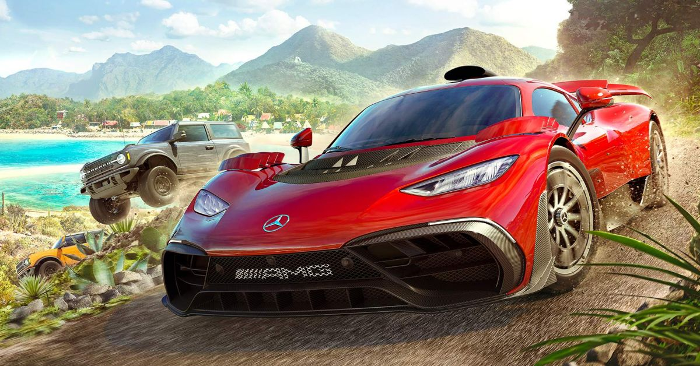

Bienvenido a la Ruta del Horizonte
Este sitio está dedicado a Forza Horizon 5, el videojuego de carreras de mundo abierto desarrollado por Playground Games y publicado por Xbox Game Studios. Ambientado en una versión vibrante de México, combina exploración, velocidad y una colección masiva de vehículos en un mapa lleno de volcanes, selvas, playas y ciudades.
Elegí este juego para el proyecto porque combina algo que me gusta —los autos y la velocidad— con un mundo abierto lleno de detalles, y me pareció un buen pretexto para practicar HTML5 y CSS con una temática que disfruto.
🏁 Explorar el GarageSobre Forza Horizon 5
Forza Horizon 5 te lleva al Horizon Festival, un evento de carreras y música ambientado en un México ficticio pero increíblemente detallado: volcanes activos, selvas tropicales, pueblos coloniales, playas y hasta zonas desérticas conviven en un mismo mapa abierto que puedes explorar libremente, sin cargas entre zonas.
Más allá de las carreras, el juego premia la exploración: hay tableros publicitarios para destruir, saltos y radares escondidos por todo el mapa, y una campaña dividida en expediciones temáticas que te llevan por distintas regiones a tu propio ritmo.
Mundo abierto sin cargas
Un mapa continuo de más de 750 km² que puedes recorrer libremente en cualquier vehículo.
Estaciones dinámicas
El clima cambia cada semana en el modo online: lluvias, calor extremo o inundaciones que alteran las rutas.
Personalización profunda
Pintura, calcomanías, mejoras de rendimiento y ajustes de suspensión para cada auto de tu garage.
EventLab
Un editor que permite crear tus propios desafíos, minijuegos y carreras para compartir con la comunidad.
Multijugador y Convoy
Explora el mapa en línea con amigos, participa en carreras compartidas o une fuerzas en el modo Convoy.
Modo Forzavista
Un modo fotográfico para explorar cada auto en detalle y tomar capturas dignas de una revista.
Ediciones del juego
- Standard — el juego base con acceso a todo el mapa y la campaña principal.
- Deluxe — incluye el Car Pass con autos adicionales durante el año.
- Premium — suma las expansiones Hot Wheels y Rally Adventure, además de acceso anticipado.
Detrás del Horizon Festival
Un vistazo al estudio que lo creó, cómo evolucionó la saga a lo largo de los años y algunos datos curiosos que muchos jugadores pasan por alto.
Playground Games
El estudio británico Playground Games fue fundado en 2010 en Royal Leamington Spa, Inglaterra, por un grupo de exdesarrolladores de Bizarre Creations (los creadores de Project Gotham Racing). Desde 2012 se especializan en la saga Forza Horizon, y en 2018 pasaron a formar parte de Xbox Game Studios. Además de la serie Horizon, el estudio también trabaja en el desarrollo de un nuevo título de Fable.
Línea de tiempo de la saga
-
2012
Forza Horizon
El primer juego de la subsaga, ambientado en un festival ficticio en Colorado, EE.UU.
-
2014
Forza Horizon 2
El festival se traslada a Europa, recorriendo el sur de Francia e Italia.
-
2016
Forza Horizon 3
Primera entrega ambientada en Australia, con playas, selvas y el interior desértico.
-
2018
Forza Horizon 4
Ubicada en Gran Bretaña, introdujo las estaciones dinámicas que cambian el mapa cada semana.
-
2021
Forza Horizon 5
El festival llega a México, con el mapa más grande y variado de la saga hasta la fecha.
Curiosidades y secretos
El volcán es real
El volcán del mapa está inspirado en el Nevado de Colima, uno de los puntos más altos de México.
Barn Finds
Hay autos clásicos escondidos por el mapa dentro de graneros abandonados, listos para ser restaurados.
Récord de lanzamiento
FH5 tuvo el lanzamiento más grande en la historia de Xbox Game Studios, con más de 6 millones de jugadores en su primera semana.
Hot Wheels a escala gigante
La expansión Hot Wheels agrega pistas naranjas suspendidas en el aire, como los circuitos de juguete reales.
Estaciones de radio temáticas
Cada estación de radio tiene su propio género y hasta su propio locutor con personalidad distinta.
Mismo motor que Forza Motorsport
Usa una versión adaptada del motor gráfico ForzaTech, compartido con la serie de simulación Forza Motorsport.
Algunos autos del Horizon Festival
Una pequeña muestra de mis autos favoritos de entre los cientos que puedes coleccionar y personalizar en Forza Horizon 5.
- CategoríaRally / Todo terreno
- TracciónIntegral (AWD)
- Vel. máx. aprox.250 km/h
- CategoríaHypercar
- TracciónTrasera / Integral (según modelo)
- Vel. máx. aprox.350 km/h
- CategoríaSuperdeportivo
- ConstrucciónFibra de carbono, muy ligero
- Vel. máx. aprox.340 km/h

- CategoríaHypercar
- TracciónTrasera (RWD)
- Vel. máx. aprox.435 km/h

- CategoríaAgrega la categoría
- TracciónAgrega la tracción
- Vel. máx. aprox.Agrega el dato

- CategoríaHypercar
- TracciónTrasera (RWD)
- Vel. máx. aprox.480 km/h (teórica)

- CategoríaDeportivo de lujo
- TracciónTrasera (RWD)
- Vel. máx. aprox.318 km/h
Videos del juego
Tráiler oficial y un segundo video con gameplay o reseña del juego.
Tráiler oficial de lanzamiento
Gameplay y exploración de México
Sobre los desarrolladores del sitio
Adriel Esaú Valle Sánchez
Estudiante de desarrollo de software, apasionado por la creación de código y la programación, con ganas de aprender y mejorar cada día, y de poder ser reconocido como uno de los mejores programadores. Busco ganar experiencia y explotar mis habilidades al máximo nivel.
Aporte al proyecto: estructura HTML, estilos CSS y la funcionalidad del sitio (galería, lightbox y navegación).

Mena de La Cruz Misael Ezequiel
Un estudiante de desarrollo de software, con ideas muy buenas y con ganas de aprender para hacer códigos a su manera y a su antojo.
Aporte al proyecto: ideas del diseño de la página web y la ayuda a subir el archivo a GitHub.

Melara Rivera Salvador Alirio
Alguien con mucha capacidad y grandes características para esta carrera de desarrollo de software.
Aporte al proyecto: buscar los videos e imágenes y el estilo que llevarían.